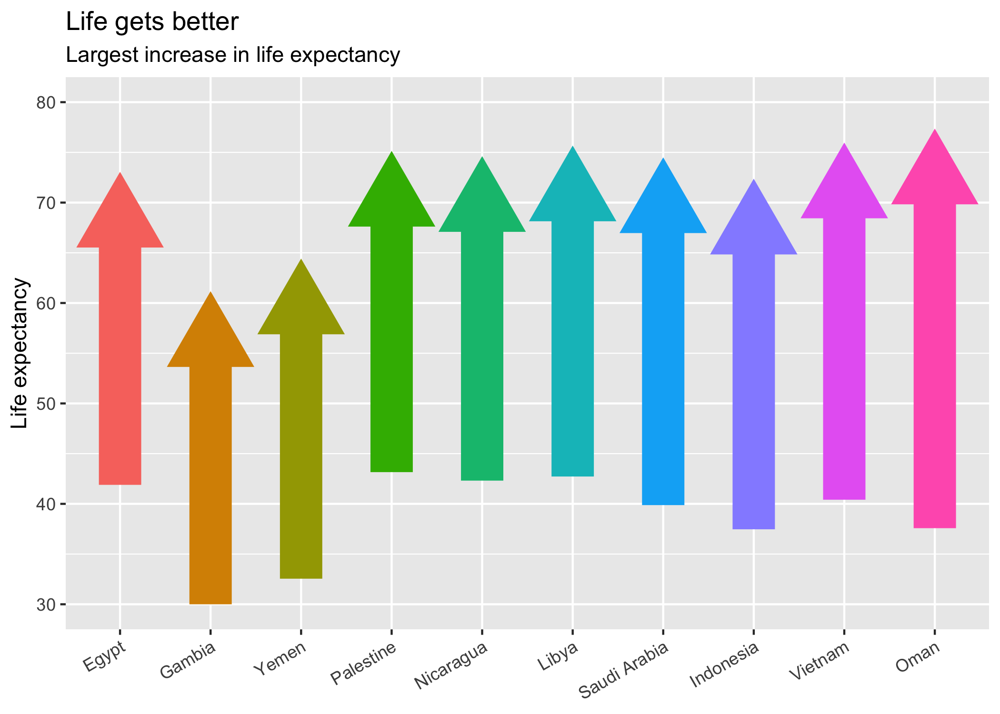

passport smooths the process of working with country names and codes via powerful parsing, standardization, and conversion utilities arranged in a simple, consistent API. Country name formats include multiple sources including the Unicode CLDR common-sense standardizations in hundreds of languages.
Installation
Install from CRAN with
install.packages("passport")or the development version from GitHub with
# install.packages("devtools")
devtools::install_github("alistaire47/passport")Travel smoothly between country name and code formats
Working with country data can be frustrating. Even with well-curated data like gapminder, there are some oddities:
library(passport)
library(gapminder)
library(tidyverse) # Works equally well in any grammar.
set.seed(47)
grep("Korea", unique(gapminder$country), value = TRUE)
#> [1] "Korea, Dem. Rep." "Korea, Rep."
grep("Yemen", unique(gapminder$country), value = TRUE)
#> [1] "Yemen, Rep."passport offers a framework for working with country names and codes without manually editing data or scraping codes from Wikipedia.
I. Standardize
If data has non-standardized names, standardize them to an ISO 3166-1 code or other standardized code or name with parse_country:
gap <- gapminder %>%
# standardize to ISO 3166 Alpha-2 code
mutate(country_code = parse_country(country))
gap %>%
select(country, country_code, year, lifeExp) %>%
sample_n(10)
#> # A tibble: 10 x 4
#> country country_code year lifeExp
#> <fctr> <fctr> <int> <dbl>
#> 1 West Bank and Gaza PS 1992 69.718
#> 2 Haiti HT 1952 37.579
#> 3 Sao Tome and Principe ST 1952 46.471
#> 4 Somalia SO 1987 44.501
#> 5 Mauritius MU 1967 61.557
#> 6 Pakistan PK 2002 63.610
#> 7 Hong Kong, China HK 1952 60.960
#> 8 Japan JP 1967 71.430
#> 9 Madagascar MG 1997 54.978
#> 10 Tunisia TN 1987 66.894If country names are particularly irregular, in unsupported languages, or are even just unique location names, parse_country can use Google Maps or Data Science Toolkit geocoding APIs to parse instead of regex:
parse_country(c("somewhere in Japan", "日本", "Japon", "जापान"), how = "google")
#> [1] "JP" "JP" "JP" "JP"
parse_country(c("1600 Pennsylvania Ave, DC", "Eiffel Tower"), how = "google")
#> [1] "US" "FR"II. Convert
If data comes with countries already coded, convert them with as_country_code():
# 2016 Olympic gold medal data
olympics <- read_tsv("https://raw.githubusercontent.com/nbremer/olympicfeathers/gh-pages/data/raw%20medal%20data/Rio%202016%20gold%20medal%20winners.txt")
olympics %>% count(country = as_country_code(NOC, from = "ioc"), sort = TRUE)
#> # A tibble: 59 x 2
#> country n
#> <chr> <int>
#> 1 US 46
#> 2 GB 28
#> 3 CN 26
#> 4 RU 19
#> 5 DE 18
#> 6 JP 12
#> 7 FR 11
#> 8 KR 9
#> 9 AU 8
#> 10 HU 8
#> # ... with 49 more rowsor to convert to country names, use as_country_name():
olympics %>%
count(country = as_country_name(NOC, from = "ioc"),
Event_gender) %>%
spread(Event_gender, n) %>%
arrange(desc(W))
#> # A tibble: 59 x 4
#> country M W X
#> <chr> <int> <int> <int>
#> 1 US 17 27 2
#> 2 China 12 14 NA
#> 3 Russia 9 10 NA
#> 4 Hungary 1 7 NA
#> 5 Japan 5 7 NA
#> 6 UK 19 7 2
#> 7 Netherlands 2 6 NA
#> 8 Australia 3 5 NA
#> 9 Germany 10 5 3
#> 10 South Korea 4 5 NA
#> # ... with 49 more rowsor translate to another language:
olympics$NOC %>%
unique() %>%
as_country_name(from = "ioc", to = "ta-my") %>%
head(10)
#> [1] "சீனா" "யூகே" "யூஎஸ்" "ஹங்கேரி" "ஸ்வீடன்"
#> [6] "கனடா" "நெதர்லாந்து" "ஜப்பான்" "ஸ்பெயின்" "ஆஸ்திரேலியா"Language formats largely follow IETF language tag BCP 47 format. For all available formats, run DT::datatable(codes) for an interactive widget of format names and further information.
III. Format
A particularly common hangup with country data is presentation. While “Yemen, Rep.” may be fine for exploratory work, to create a plot to share, such names need to be changed to something more palatable either by editing the data or manually overriding the labels directly on the plot.
If the existing format is already standardized, passport offers another option: use a formatter function created with country_format, just like for thousands separators or currency formatting. Reorder simply with order_countries:
living_longer <- gap %>%
group_by(country_code) %>%
summarise(start_life_exp = lifeExp[which.min(year)],
stop_life_exp = lifeExp[which.max(year)],
diff_life_exp = stop_life_exp - start_life_exp) %>%
top_n(10, diff_life_exp)
# Plot country codes...
ggplot(living_longer, aes(x = country_code, y = stop_life_exp - 3.3,
ymin = start_life_exp,
ymax = stop_life_exp - 3.3,
colour = factor(diff_life_exp))) +
geom_point(pch = 17, size = 15) +
geom_linerange(size = 10) +
# ...just pass `labels` a formatter function!
scale_x_discrete(labels = country_format(),
# Easily change order
limits = order_countries(living_longer$country_code,
living_longer$diff_life_exp)) +
scale_y_continuous(limits = c(30, 80)) +
labs(title = "Life gets better",
subtitle = "Largest increase in life expectancy",
x = NULL, y = "Life expectancy") +
theme(axis.text.x = element_text(angle = 30, hjust = 1),
legend.position = "none")
By default country_format will use Unicode CLDR (see below) English names, which are intelligible and suitable for most purposes. If desired, other languages or formats can be specified just like in as_country_name.
Data
The data underlying passport comes from a number of sources, including
- The Unicode Common Locale Data Repository (CLDR) Project supplies country names in many, many languages, from Afrikaans to Zulu. Even better, CLDR aspires to use the most customary name instead of formal or official ones, e.g. “Switzerland” instead of “Swiss Confederation”.
- The United Nations Statistics Division maintains and publishes the M.49 region code and the UN geoscheme region codes and names.
- The CIA World Factbook supplies a standardized set of names and codes.
- The National Geospatial-Intelligence Agency (NGA) is the organization responsible for standardizing US government use of country codes. It inherited the now-deprecated FIPS 10-4 from NIST, which it turned into the GEC, which is now also deprecated in favor of GENC, a US government profile of ISO 3166.
- Wikipedia offers a rich set of country codes, some of which are aggregated here.
- Open Knowledge International’s Frictionless Data supplies a set of codes collated from a number of sources.
- The regex powering
parse_country()are fromcountrycode. If you would like to improve both packages, please contribute regex there!
Licensing
passport is licenced as open-source software under GPL-3. Unicode CLDR data is licensed according to its own license, a copy of which is included. countrycode regex are used as a modification under GPL-3; see the included aggregation script for modifiying code and date.